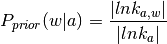
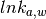
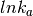
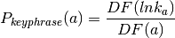
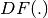
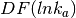
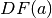
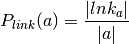
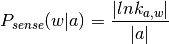

Algorithms & implementation details¶
Entity linking statistics¶
Many approaches to entity linking exist; this section gives a short overview of what is possible with semanticizest. It is intended as a reference guide; you don’t need to memorize all this to use semanticizest.
All entity linking strategies use statistics gathered from Wikipedia. These statistics concern:
Wikilinks, or “links” for short. These are the familiar blue and red hyperlinks between Wikipedia articles. External links (URLs) are not wikilinks, so they are not involved in entity linking.
A link has a target and an anchor text, or anchor for short. The target is a page title, which may (blue link) or may not (red link) refer to an actual page in the Wikipedia. The anchor is the text of the link as it appears in the page where the link was found. Often, but not always, the target page’s title and the anchor coincide. By picking up all the anchors for an entity (target page), semanticizest knows that “Napoleon Bonaparte” is common way of referring to what Wikipedia calls “Napoleon” (the title of the page about Bonaparte).
Entities. An entity is any link target that lives/would live in the Wikipedia “main” namespace, the encyclopedic content, if the link is/were blue.
Entities are represented by the titles or URLs of the links’ targets. That means all articles in a Wikipedia are potential entities, but pages that are never linked to are not considered entities. However, all “red links” (links to non-existent pages) are considered entities, so there is no one-to-one mapping between articles and entities.
Note
Concepts that need explanation/clarification:
- sense
Formulas for determining link candidates and ranking candidates. These two steps correspond exactly to the baseline retrieval model of [Odijk2013].
Prior probability determines how likely it is that anchor text
 links to Wikipedia article
links to Wikipedia article  , also known as commonness, “the
extent to which each sense is well-known” [Medelyan2008].
, also known as commonness, “the
extent to which each sense is well-known” [Medelyan2008].
here
is a Wikipedia article, is the anchor text,
is (multi)set cardinality,  is the multiset of
links with anchor text and target ,
and  is the multiset of links with anchor text .Keyphraseness “is defined as the number of Wikipedia articles that use it as an anchor, divided by the number of articles that mention it at all.” [Milne2008] “[is an] estimate of the probability that a phrase is selected as a keyphrase for a document” [Mihalcea2007], “the probability of being a [link] candidate” [Medelyan2008]

where
is the anchor text (an n-gram of one or more terms),
 denotes the document frequency in Wikipedia, 
is the number of Wikipedia articles where is used as the anchor
text of a link and  the number of Wikipedia articles
containing the text at all.Link probability is the same as ‘keyphraseness’, except that link probability uses term frequencies instead of document frequencies (“we determine this probability based on all occurrences, also including multiple occurrences in an article” [Meij2012]):

Sense probability “an estimate for the probability that an n-gram is used as an anchor linking to Wikipedia article
” [Odijk2013]:
| [Mihalcea2007] | Mihalcea, Rada, and Andras Csomai. “Wikify!: linking documents to encyclopedic knowledge.” Proceedings of the sixteenth ACM conference on Conference on information and knowledge management. ACM, 2007. |
| [Medelyan2008] | (1, 2) Medelyan, Olena, Ian H. Witten, and David Milne. “Topic indexing with Wikipedia.” Proceedings of the AAAI WikiAI workshop. 2008. |
| [Milne2008] | Milne, David, and Ian H. Witten. “Learning to link with wikipedia.” Proceedings of the 17th ACM conference on Information and knowledge management. ACM, 2008. |
| [Meij2012] | Meij, Edgar, Wouter Weerkamp, and Maarten de Rijke. “Adding semantics to microblog posts.” ACM, 2012. |
| [Odijk2013] | (1, 2) Odijk, Daan, Edgar Meij, and Maarten De Rijke. “Feeding the second screen: Semantic linking based on subtitles.” OAIR, 2013. |
Data structures¶
Note
Fill me in with enough details of the SQLite tables and count-min sketches to explain potential wtf’s. We don’t need to repeat the database schema here because it’s an implementation detail.